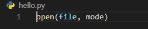
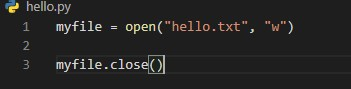
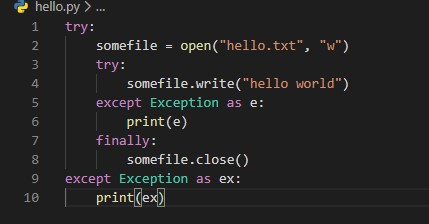
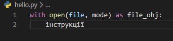
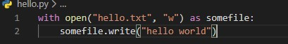

From the Firehose
Робота з файлами
Python підтримує безліч різних типів файлів, але умовно їх можна розділити на два види: текстові і бінарні. Текстові файли - це наприклад файли з розширенням cvs, txt, html, в загальному будь-які файли, які зберігають інформацію в текстовому вигляді. Бінарні файли - це зображення, аудіо та відеофайли і т.д. Залежно від типу файлу робота з ним може трохи відрізнятися.При роботі з файлами необхідно зберігати певну послідовність операцій:
- Відкриття файла за допомогою метода open()
- Читання файла за допомогою метода read() або запис у файл методом write()
- Закриття файла методом close()
Відкриття і закриття файла
Щоб розпочати роботу з файлом, його потрібно відкрити за допомогою функції open(), яка має наступне формальне визначення:
Перший параметр функції представляє шлях до файлу. Шлях файлу може бути абсолютним, тобто починатися з літери диска, наприклад, C: //somedir/somefile.txt. Або можна бути відносним, наприклад, somedir / somefile.txt - в цьому випадку пошук файлу буде йти щодо розташування запущеного скрипта Python. Другий аргумент, що передається - mode встановлює режим відкриття файлу в залежності від того, що ми збираємося з ним робити. Існує 4 загальних режиму:
- r (Read). Файл відкривається для читання. Якщо файл не знайдений, то генерується виключення FileNotFoundError.
- w (Write). Файл відкривається для запису. Якщо файл відсутній, то він створюється. Якщо подібний файл вже існує, то він створюється заново, і відповідно старі дані в ньому стираються.
- a (Append). Файл відкривається для дозапису. Якщо файл відсутній, то він створюється. Якщо подібний файл вже існує, то дані записуються в його кінець.
- b (Binary). Використовується для роботи з бінарними файлами. Приміняється разом з параметрами w або r.
Після завершення роботи з файлом його обов'язково потрібно закрити методом close(). Даний метод звільнить всі пов'язані з файлом використовувані ресурси.
Наприклад, відкриємо файл "hello.txt" для запису:
При відкритті файлу або в процесі роботи з ним ми можемо зіткнутися з різними винятками, наприклад, до нього немає доступу і т.д. У цьому випадку програма видасть помилку, а її виконання не дійде до виклику методу close, і відповідно файл не буде закритий.
В такому випадку ми можемо опрацювати виключення:
В даному випадку вся робота з файлом йде у вкладеному блоці try. І якщо раптом виникне якесь виключення, то в будь-якому випадку в блоці finally файл буде закритий.
Однак є і більш зручна конструкція - конструкція with:
Ця конструкція визначає для відкритого файлу змінну file_obj і виконує набір інструкцій. Після їх виконання файл автоматично закривається. Навіть якщо при виконанні інструкцій в блоці with виникнуть будь-які винятки, то файл все одно закривається.
Так, перепишем попередній приклад:
